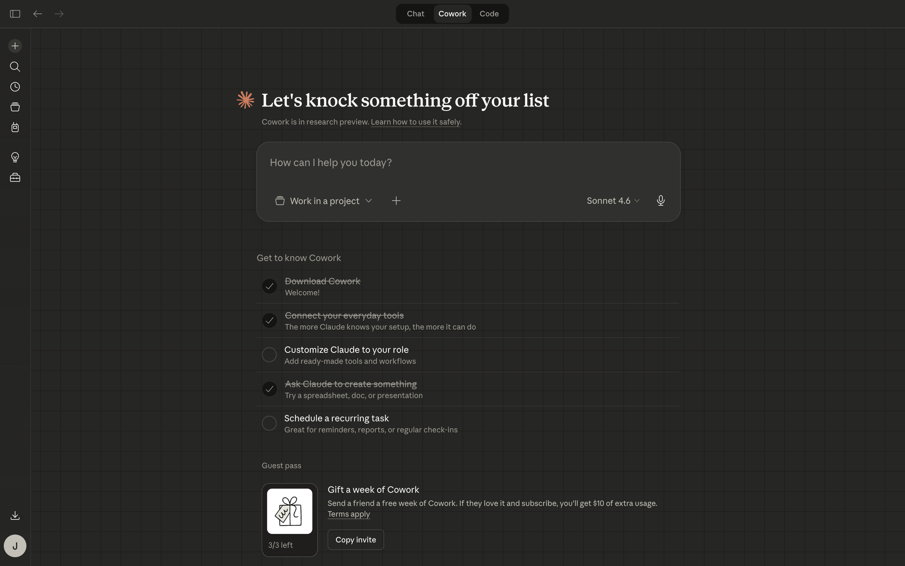
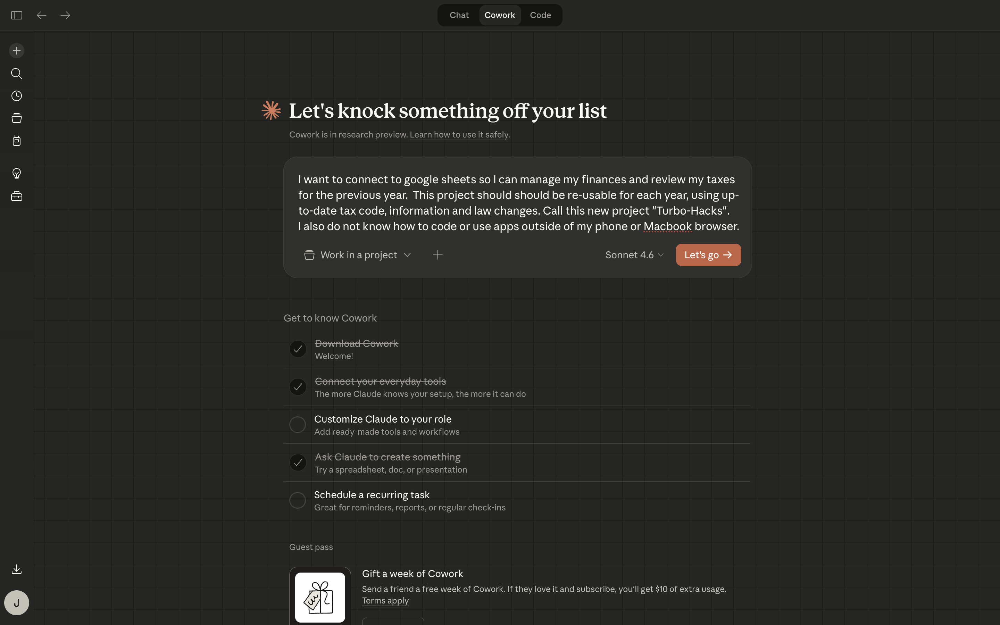
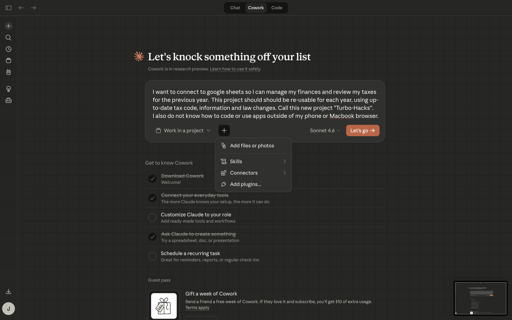
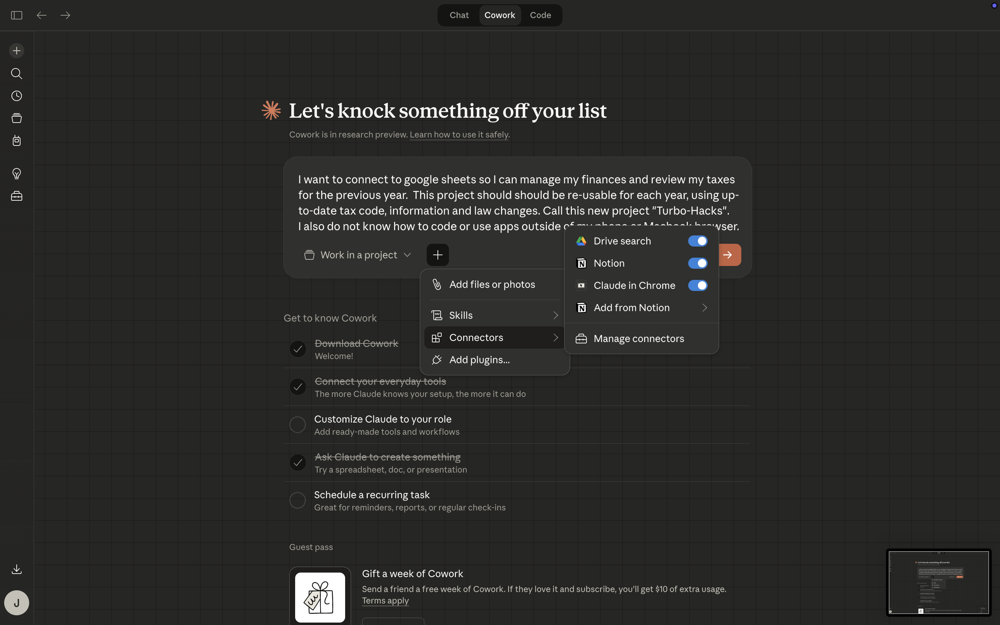
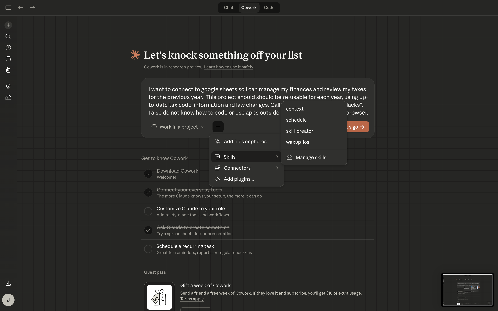
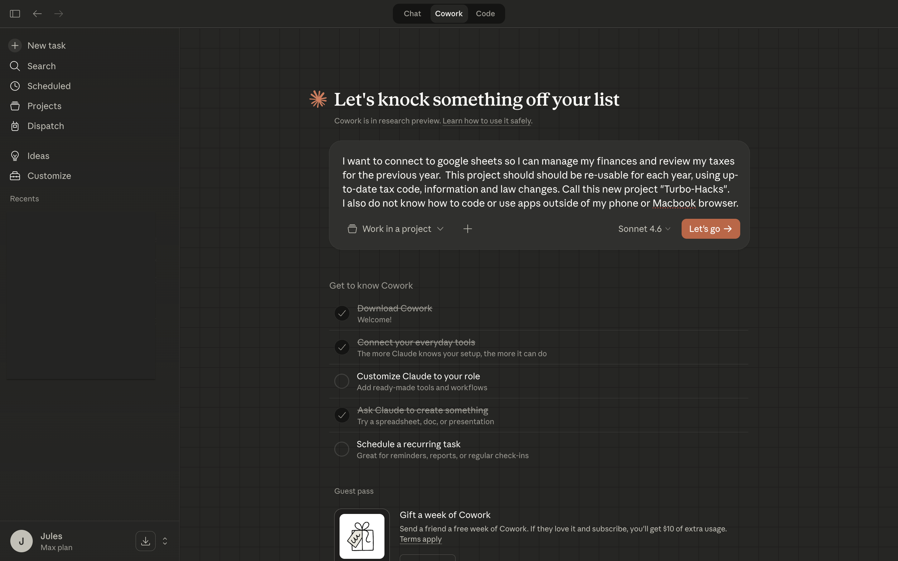

Screen 1
Start a new Cowork task
This is the blank Cowork starting point before anything has been typed.
These are real screenshots from the Claude Mac app, not AI-generated mockups. This set shows what Cowork looks like when starting a task and adding extra help like skills or connectors. Cowork is usually a later step, and it may require a paid Claude plan.
These screenshots are good for explaining what Cowork looks like before and after a task is written, plus what the add menu exposes for files, skills, connectors, and plugins.

This is the blank Cowork starting point before anything has been typed.

This example is great for showing how a real-world task can be described in plain English.

This menu is where a beginner can add files, skills, connectors, or plugins to the task.

This is useful when explaining what a connector is without making it sound scary.

This is a clean example for showing that skills are optional helpers, not a requirement to get started.

This is a strong screenshot for showing what Cowork looks like once the task is prepared and ready to go.